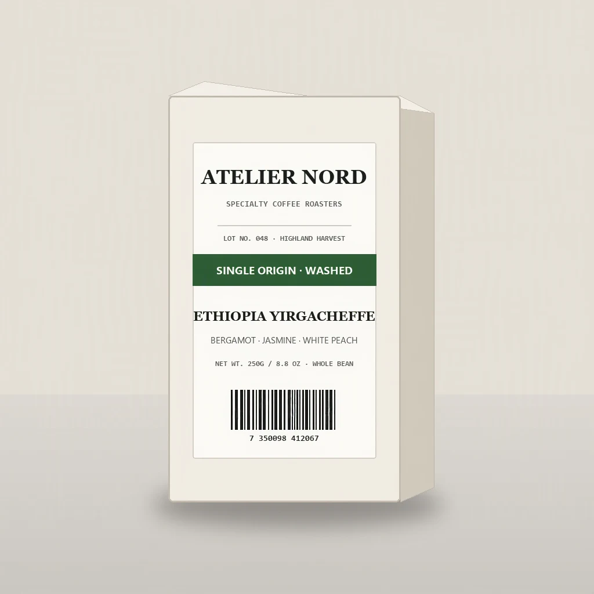

MAI-Image-2.7 Commercial Image Editing Studio: #1 Brief Execution (BRF 4.17/5) & 3.8×–8.7× Edits/$1 on Flash
Built on 121 live Microsoft Foundry API runs ($6.041 total measured spend, SHA-256 sealed) across 8 production image editing models × 12 1024×1024 commercial briefs (Portrait retouch/ID/grade, Product clean bg/packaging colorway/seasonal, SaaS hero/Fintech UI/mascot/logo cleanup, S11 native 4-channel RGBA cutout, S12 two-tier routing, and ZH-CN bilingual prompt perturbation). 100% self-contained with zero external CDN dependencies.
12 Commercial Scenarios × 8 Production Models Split-Slider
Drag the split divider to compare any model against the 1024×1024 original input; move your pointer over the canvas to inspect micro-typography, barcodes, and skin texture in the synchronized 2.5× magnifier.


MAI-Image-2.7 and 2.7-Flash lock non-edited typography and barcodes at flat $0.035 / $0.010 pricing. For full-background swaps on refractive glass bottles (S04/S06), pair MAI with a foreground RGBA alpha mask lock.
8-Model Side-by-Side Comparison Strip (Click Any Card to Load into Split-Slider)
All 8 models evaluated on the identical SHA-256 frozen 1024×1024 input and commercial brief.
S11 Native 4-Channel RGBA Cutout Inspector (True Alpha vs Baked Fake Grid)
Switch the live CSS backdrop surface below: true 4-channel RGBA outputs (MAI-Image-2.7, MAI-2.7-Flash, OpenAI GPT Image) composite cleanly onto emerald or terracotta surfaces, whereas FLUX.2-pro/flex paint a fake gray-white checkerboard into opaque RGB pixels (0.0% alpha) and prior MAI-Image-2.6 returned HTTP 400 on background="transparent".
S12 Two-Tier Routing: MAI-Flash ($0.010) Staging → MAI-2.7 ($0.035) Relight = $0.045
Simulates an iterative creative studio brief: Turn 1 stages the studio coffee canister on a minimalist wooden cafe counter; Turn 2 relights that output into golden-hour warm tungsten lighting while keeping composition intact.
CNS ≤ 3 across every model). Production architecture should combine MAI-2.7-Flash ($0.010) → MAI-Image-2.7 ($0.035) ($0.045 total vs $0.1226 on Sunburst — 63.3% cheaper & 42.1% faster) with a Turn-0 RGBA/SVG label mask composite to guarantee 100% zero-glyph-drift packaging.
| 2-Turn Workflow (Turn 1 → Turn 2) | 2-Turn Total Cost | Savings vs Sunburst | 2-Turn Latency | Turn 2 Scores (BRF/VEQ/CNS) | Turn 1→2 Scene SSIM | Turn 0→2 Canister SSIM |
|---|
ZH-CN vs EN Bilingual Prompt Perturbation (4 Scenarios × 4 Models = 16 Runs)
Tests whether APAC creative teams can issue native Simplified Chinese briefs directly without translation proxies: MAI-Image-2.7 and MAI-2.7-Flash maintain 4/4 (100%) commercial acceptance, whereas FLUX.2-pro collapses on Chinese S01 portrait blemish retouching (100.0 → 33.4, -66.6 pts normalized / -60+ pts BRF drop from 5 → 1).
| Scenario | Model | EN Score (0–100) | ZH Score (0–100) | Delta (PTS) | Non-Edit SSIM (EN → ZH) | ZH Verdict |
|---|
Pareto Cost-vs-Quality Frontier Scatter (Driven by summary.json)
X-axis shows measured unit cost per 1024×1024 edit (left is cheaper); Y-axis shows mean ServImage 3D profile score; dashed outer ring denotes native 4-channel RGBA support.
Accepted Commercial Edits per $1 Spend
MAI-Image-2.7-Flash ($0.010 flat per-image pricing) delivers 41.67 accepted edits/$1 with zero token-billing variance.
8-Model Sealed Leaderboard (96 Primary + 9 Turn-2 + 16 ZH Perturbation = 121 Live Runs)
| Model | Provider | BRF / VEQ / CNS | Mean Profile | 12-Brief Accept | Mean Non-Edit SSIM | Median Latency | Mean Cost | Accepted / $1 | Native RGBA |
|---|
provenance=reported): On Artificial Analysis Image Editing Arena v2.1 (5,478 blind human preference votes), MAI-Image-2.7 ranks #1 globally at 1215 Elo (+4 Elo ahead of GPT Image 2.6 Sunburst max at ~1/5th per-image cost), and ranks #2 lab globally on LMArena (1387 Elo).
Visual Summary Infographic & Reproducible Benchmark Harness
Sanitized end-to-end generation, multi-provider runner, and dual-track verifier scripts are archived under scripts/ alongside sealed data/*.json manifests.

# Reproducible Bundle Layout (demos/commercial-image-edit-benchmark-studio/) ├── data/ │ ├── summary.json # 8-model aggregates, Turn-2 consistency & ZH/EN perturbation summary │ ├── results_enriched.json # All 121 runs with latency, cost, SHA-256, SSIM & blind VLM scores │ ├── catalog.json # 12 commercial scenarios with EN/ZH prompts & constraints │ └── freeze_manifest.json # Pre-frozen SHA-256 hashes for all 12 1024x1024 reference inputs ├── scripts/ │ ├── generate_references.py # Generates & SHA-256 freezes the 12 commercial reference inputs │ ├── run_benchmark.py # Unified runner across MAI / OpenAI / FLUX.2 image edit endpoints │ └── evaluate_benchmark.py # Computes Non-Edit SSIM + RGBA Alpha purity + blind ServImage rubric └── references/ & outputs/ # 141 1024x1024 comparison samples (.webp)